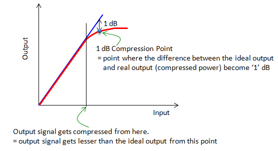

|
RF - 1dB Compression Point Home : www.sharetechnote.com |
|
As you see in the plot show below, to some point the ideal operation curve and real operation curve of an amplifier is almost identical (i.e, within linear operation region) but from a certain point the real output signal gets compressed and the ideal output start diverging from the ideal (linear) curve. If you measure the divergence (the difference between the ideal line and real curve) along the operation curve, you would hit a specific point where the difference between the linear line (ideal operation line) and the real operation curve become 1 dB. That point is called 1dB compression point. Along with IP3, this point is used as an indicator showing the degree of nonlinearity of an amplifier.

|